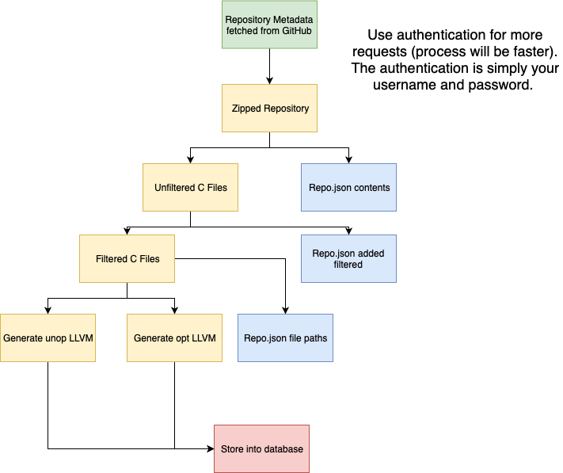

Overview¶
This is a log of major design decisions and reasoning for the Data Gathering portion of Decompy.
Why is this necessary?¶
Machine Learning requires a substantial amount of data to train off of. Additionally, machine learning needs the best, valid data (in our case it compiles and filtered out a few header files; see other sections). Lastly, the Decompy team has aimed to make this modular so that other users can build off of and use this for gathering their own data for their own parameters like a language or filter.
What is the process?¶
{kind=link}
The above image displays the general flow for gathering data for our ML agent. We first utilize GitHub’s API to search for our specific language (in our case C language) and generate metadata for the repo. In stage two, we then filter out the C files from that repo and store them into an Unfiltered folder. Once that has finished, the third stage reads from the Unfiltered folder and looks to see what is good data for our ML agent. This stage looks to make sure we have compilable data, and data that pass our filters (correct headers, file size, not too complex). Finally, in stage 4, we compile the filtered (valid) C files into unoptimized and optimized files which will prepare us to bulk load into the database. As of January 30, 2019, the team has decided to store all META data into one JSON file for ease of use called “repo.json”. The process is still valid and should be seen as a reference and motivation for the one JSON file.
How to Start¶
Depending on which stage you want, you can run the various methods that match their stage in the CreateLocalData.py class.
To begin, it is important to pay close attention to the default parameters and override them as seen fit. For example, it has
a default file path to store the unfiltered repos into, a destination path once done, file names, filters for Github, what
language to download from Github into the database, the name of the database, override parameters for the database transactions, and more.
It is this reason why the documentation should be referenced not only at every step, but at creating the object as well.
Additionally, a config file is utilized to further speed up the process and allow more requests, you may find yourself rate limited otherwise.
This config file needs to be of JSON format like so:
{ "github": { "username": "github_username_here", "password": "github_password_here"} }
How to Use¶
If you are running this purely from the root of the project via command line you may do something as below:
python3
>>>from decompy.DataGathering.CreateLocalData import CreateLocalData
>>>cld = createLocalData()
>>>cld.all_stages_increment("2014-04-11", "2019-01-30", 1, 3)
A couple of things to note. You are importing the CreateLocalData module, then creating a DEFAULT constructor. Read above if you would want other
data and more customization than what is defaulted. Finally, the all_stages_increment() function utilizes the five steps of our process
and combines it into one. You can organize this by the date range and page numbers (if you wanted separate processes for example).
Overview of Each Step¶
.stage1_gather_repo_meta() function which grabs the repos and generates metadata into a repo.json based off of the date and page range..stage2_get_repos() function that grabs the C (or specified language in the object) files from the repo and later stores dates into the repo.json..stage3_filter_files() function which filters out the data based off of our constraints..stage4_generate_llvm() function that compiles the C code into unoptimized, optimized, elf, and object LLVM code..stage5_insert_database() function that inserts all the data matching our constraints into the database.